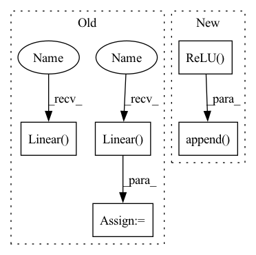

Pattern ID :31779

Before Change
stddev_func = self.ones_like_projection_dim
if architecture is None:
mean_func = nn.Sequential(nn.Linear(representation_dim, projection_dim))
if stddev_func is None:
stddev_func = nn.Sequential(nn.Linear(representation_dim, projection_dim))
else:
layers = []
input_dim = representation_dim
After Change
input_dim = representation_dim
for layer_def in architecture:
layers.append(nn.Linear(input_dim, layer_def["output_dim"]))
layers.append(nn.ReLU())
layers.append(nn.BatchNorm1d(num_features=layer_def["output_dim"]))
input_dim = layer_def["output_dim"]
layers.append(nn.Linear(input_dim, projection_dim))
mean_func = nn.Sequential(*layers)
In pattern: SUPERPATTERN
Frequency: 4
Non-data size: 5
Instances
Fragment ID: 92813039
Project Name: humancompatibleai/eirli
Commit Name: 8912b60873ffbe1673db0713dbcbbc14d0bbc830
Time: 2020-10-15
Author: codywild@berkeley.edu
File Name: src/il_representations/algos/decoders.py
M Class Name: LossDecoder
N Class Name: LossDecoder
M Method Name: get_projection_modules(5)
N Method Name: get_projection_modules(5)
M Parent Class: nn.Module
N Parent Class: nn.Module
M File Name: src/il_representations/algos/decoders.py
N File Name: src/il_representations/algos/decoders.py
M Start Line: 71
M End Line: 85
N Start Line: 72
N End Line: 85
'>
Before Change
print(f"input dimentsions: {self.hidden_units}")
self.fc1 = nn.Linear(self.pose, self.hidden_units[0])
self.fc2 = nn.Linear(self.hidden_units[0], self.hidden_units[1])
self.fc3 = nn.Linear(self.hidden_units[1], self.hidden_units[2])
self.fc4 = nn.Linear(self.hidden_units[2], self.hidden_units[3])
self.fc5 = nn.Linear(self.hidden_units[3], self.hidden_units[4])
self.fc6 = nn.Linear(self.hidden_units[4], self.dof)
After Change
input_dim = self.pose
for output_dim in self.hidden_units:
layers.append(nn.Linear(input_dim, output_dim))
layers.append(nn.ReLU())
input_dim = output_dim
layers.append(nn.Linear(input_dim, self.dof))
self.layers = nn.Sequential(*layers)
'>
Fragment ID: 92813048
Project Name: youtalk/iknet
Commit Name: 492ac3f9080782b43c9961a321689afeed47805c
Time: 2021-05-03
Author: yutaka.kondo@youtalk.jp
File Name: iknet.py
M Class Name: IKNet
N Class Name: IKNet
M Method Name: __init__(2)
N Method Name: __init__(2)
M Parent Class: nn.Module
N Parent Class: nn.Module
M File Name: iknet.py
N File Name: iknet.py
M Start Line: 33
M End Line: 46
N Start Line: 33
N End Line: 49
'>
Before Change
stddev_func = self.ones_like_projection_dim
if architecture is None:
mean_func = nn.Sequential(nn.Linear(representation_dim, projection_dim))
if stddev_func is None:
stddev_func = nn.Sequential(nn.Linear(representation_dim, projection_dim))
else:
layers = []
input_dim = representation_dim
After Change
input_dim = representation_dim
for layer_def in architecture:
layers.append(nn.Linear(input_dim, layer_def["output_dim"]))
layers.append(nn.ReLU())
layers.append(nn.BatchNorm1d(num_features=layer_def["output_dim"]))
input_dim = layer_def["output_dim"]
layers.append(nn.Linear(input_dim, projection_dim))
mean_func = nn.Sequential(*layers)
'>
Fragment ID: 92813053
Project Name: humancompatibleai/eirli
Commit Name: 32a20e6bf5660acd67b3904058e549bb2bd89450
Time: 2020-10-15
Author: codywild@berkeley.edu
File Name: src/il_representations/algos/decoders.py
M Class Name: LossDecoder
N Class Name: LossDecoder
M Method Name: get_projection_modules(5)
N Method Name: get_projection_modules(5)
M Parent Class: nn.Module
N Parent Class: nn.Module
M File Name: src/il_representations/algos/decoders.py
N File Name: src/il_representations/algos/decoders.py
M Start Line: 71
M End Line: 85
N Start Line: 72
N End Line: 85